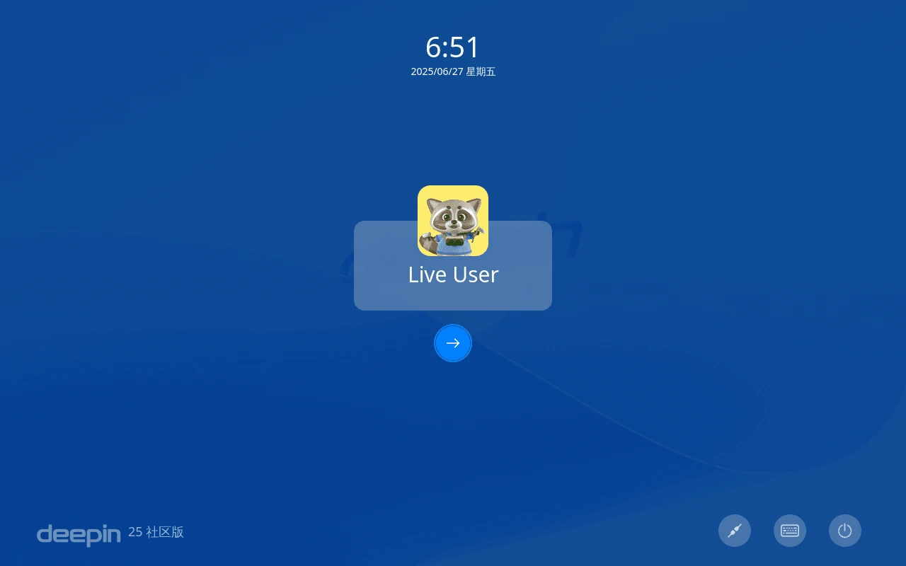
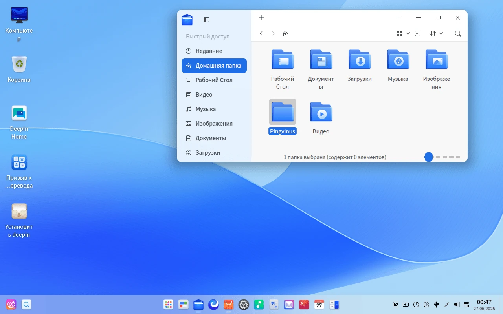
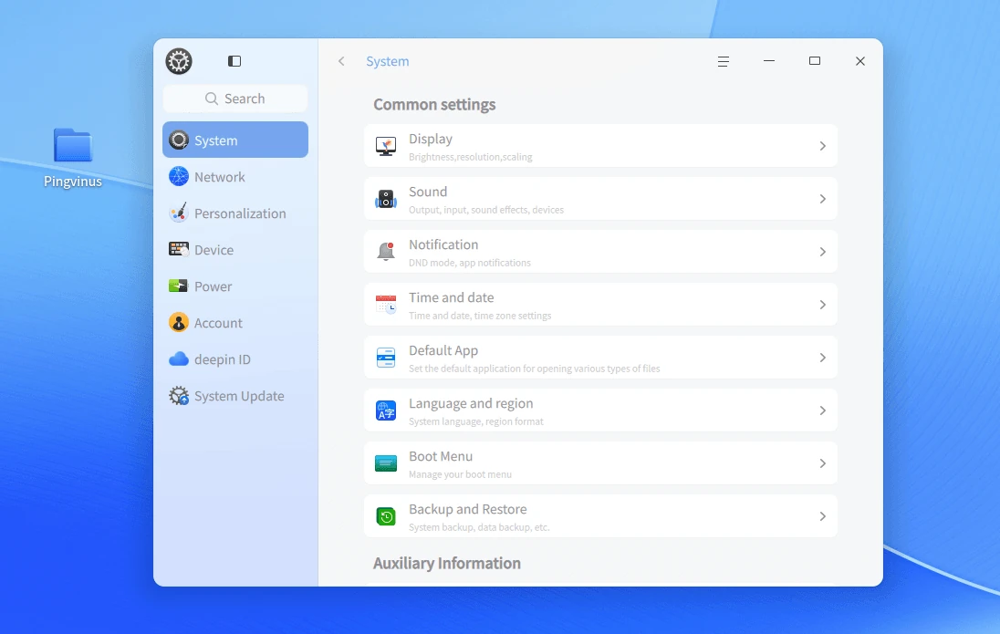
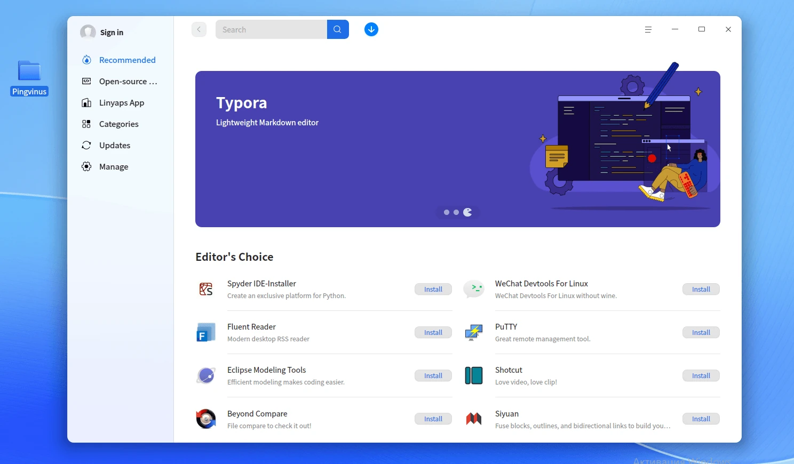
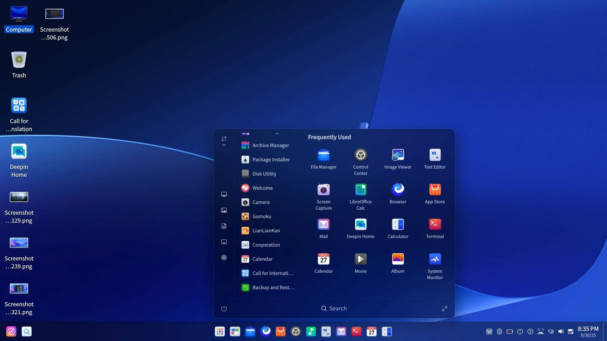

deepin, do nosso jeito.
O deepin é um sistema operacional gratuito desenvolvido pela UnionTech, que combina design elegante, tecnologia moderna e uma experiência de uso simples e intuitiva. Aqui você encontra a comunidade brasileira que traduz, testa, apoia e contribui para o desenvolvimento do deepin.
Bonito não é só conversa
Conheça a interface do deepin





A comunidade brasileira do deepin
Em meados de 2014, começaram a surgir diferentes iniciativas de usuários interessados em criar uma comunidade brasileira para o deepin. No final de 2018, essas comunidades se uniram para formar uma única comunidade deepin no Brasil.
Hoje, a comunidade deepin Brasil é reconhecida internacionalmente pelo suporte oferecido aos usuários brasileiros e pelo incentivo à participação no desenvolvimento do sistema.
Primeiros movimentos
Usuários começam a se organizar e formar os primeiros grupos dedicados ao deepin no Brasil.
União das comunidades
As comunidades existentes se unem para formar uma única comunidade deepin no Brasil.
Referência internacional
Fazemos parte da comunidade internacional e somos frequentemente mencionados pela equipe de desenvolvimento em eventos e comunicações oficiais, além de sermos reconhecidos por outras comunidades deepin ao redor do mundo.
Faça parte da comunidade
Entre nos nossos canais, acompanhe as novidades e ajude a fortalecer o deepin no Brasil.